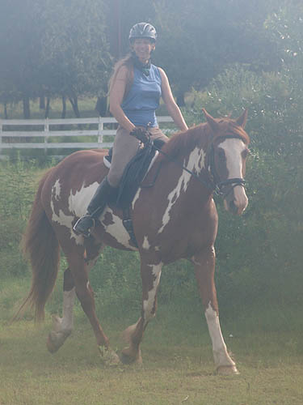
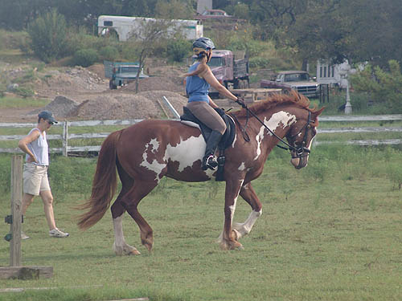
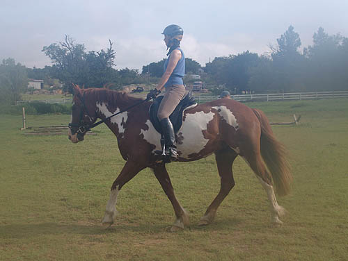
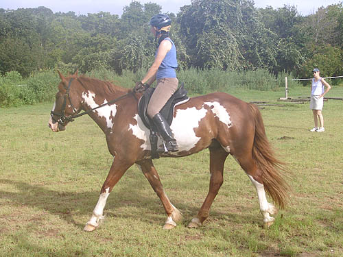
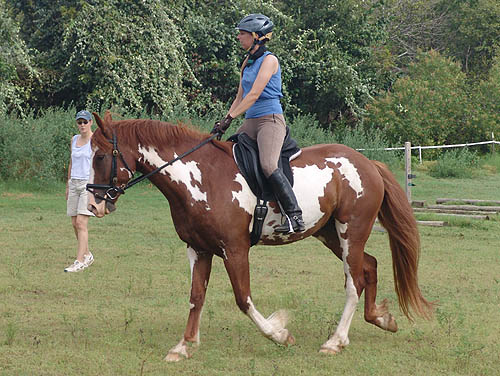
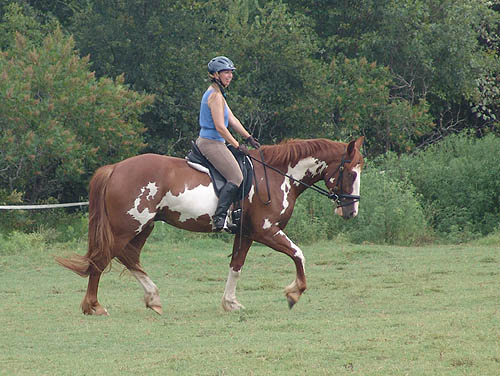
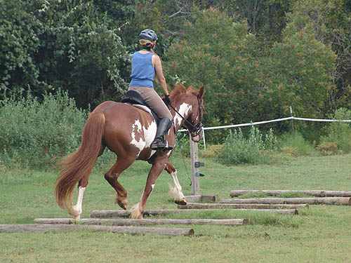
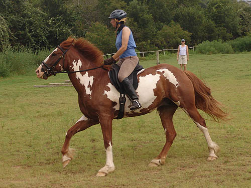
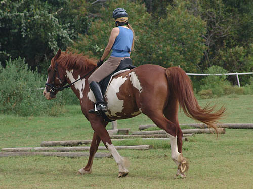
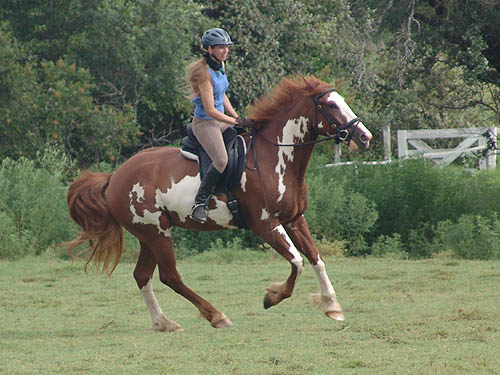

A dressage lesson
on Nero Nero's coming along. We're
pleased with his trot work,
but I think his canter work
will be better once we've started
going out with the hunt.
I used spurs today, which helped,
but he needs to figure out
forward. Thuy was like this, and
so was Othello. A big field
for just cantering on helped both of them.
It wasn't terribly hot,
but the humidity was bad. The camera kept fogging up.

Warming up at the trot.

It's good to have a
trainer on the ground to work on my position, as well as the horse.

His trot is really coming
along with the dressage work.

Sometimes he'd get on
the forehand. I was supposed to catch it before it happened (and put on
more leg), but I didn't always get it.

We worked this lesson
on my leg staying back.

We also worked on keeping
transitions steady.

He really animates over
the trot poles.

The spurs worked well
for getting and keeping the canter, but they didn't make for a soft, round
canter.

I think cantering in
a group will encourage him to be more pleasant in the ring.

We did circle around
and around both directions, so it's improving, just like the trot did.